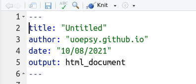
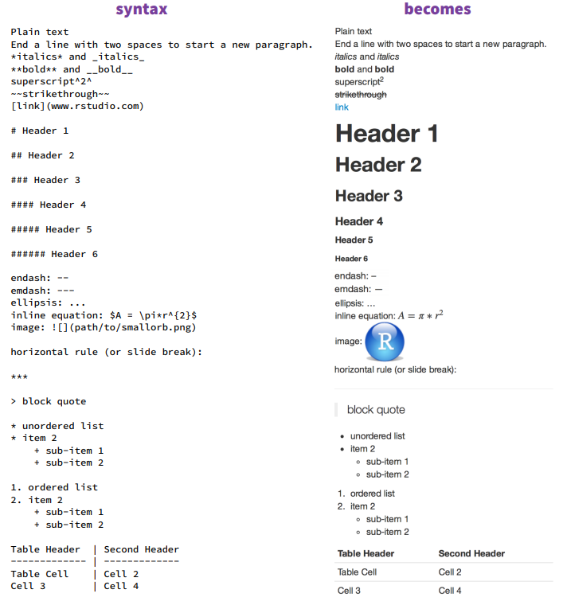
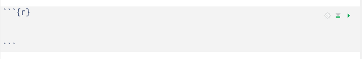
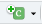
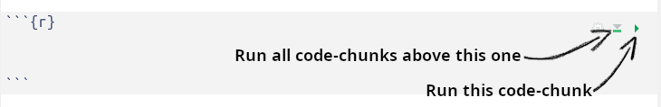
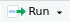

Quarto Basics
What is Quarto?
TODO rmd > qmd this course is intermediate. lots more it can do
Why use Quarto?
Quarto documents combine the analytical power of R and the utility of a text-processor. We can have one document which contains all of our analysis as well as our written text, and can be compiled into a nicely formatted report. This saves us doing analysis in R and copying results across to Microsoft Word. It ensures our report accurately reflects our analysis. Everything that you’re reading now has all been written in Quarto!
The fundamental idea of Quarto is to be able to write normal text interspersed with “code-chunks” (i.e., chunks of code!). With Quarto documents we are able to see and edit the code along with specifying formatting of our text. We then compile our document into a nice file (e.g. a .pdf file or a .html file) which formats our text and shows/hides code and output according to what we have specified.
You can see a Quarto workflow in Figure 1
Prerequisite packages
Prior to starting, we need to make sure we have all the required packages installed. Run these two lines in your console. It may take some time, so be patient. The rmarkdown and knitr packages are going to be necessary for rendering any RMarkdown document. To enable us to compile to a PDF, we’re going to need the tinytex package, and we’re going to need to use it to install a minimal version of LaTeX on our system:
install.packages(c("rmarkdown","tinytex","knitr"))
tinytex::install_tinytex()My first Quarto doc
First things first, we need to open an RMarkdown document.
In the top menu bar, click on File > New File > RMarkdown
A dialgue box will pop-up
yaml

YAML, and contains metadata about the documentThe bit at the top of your document between the three dashes --- is the “metadata”. This is the information about your document. Things like the title, author, output format (html/pdf). For now, we can leave it as it is, but there are lots and lots of features you can exploit via the yaml, such as including stylesheets for html (which is how we set the colours/fonts etc in these pages), to setting custom parameters which enable you to bulk create multiple reports for different values (e.g. a different report on each country in a list). We won’t cover this sort of stuff in this course as it is not so useful for producing scientific reports, but once you are an RMarkdown pro, if you get interested in this sort of thing there is lots of info at https://bookdown.org/yihui/rmarkdown/params-knit.html.
We will come back to editing the yaml a little bit in Lesson 7, but for now we can leave it as it is, having been automatically generated based on the author and title we gave the little pop-up box.
Remove the template text
When you open a new RMarkdown document, it opens a template for you, to help with learning how to use it. Read through the template, and follow along with the video to delete all of it - we want to start fresh:
Text and Code-Chunks
Writing Text
As mentioned, RMarkdown is a format in which we can write both code and text. It has lots of useful advantages - you can write in such a way that if your data or analysis changes, then your results, plots and tables will automatically update to reflect these changes.
Writing text involves formatting your words in plain-text “markdown”. There are a few rules to get to grips with, but it is fairly straightforward to start typing your paragraph in your document:
- We use the # symbol to denote a section heading (with ## being a subsection, and ### being subsubsection, and so on.)
- Bold text is made by wrapping a sentence in two asterisks
**, or two underscores__ - italic text is made by wrapping it in one
*or_.

Adding Code-Chunks
As shown in Figure @ref(fig:chunk), We include code-chunks by using three backticks ``` followed by squiggly brackets with “r” in them {r}, to specify in the document that this is R code (we can actually also include other programming languages!). We then end the code chunk with three backticks again. Everything between these backticks will get evaluated as a chunk of R code, and things outside these chunks will be considered text.

There are a couple of short cuts for adding a new code-chunk. Either of the options below will create a code-chunk wherever your cursor is in the document at that time.
At the top-right of your document, there will be a set of icons. One of these is a little “c” inside a box with a plus in the corner. Click this and choose R from the menu.
::: {.cell layout-align=“left”} ::: {.cell-output-display}  ::: :::
Type Ctrl+Alt+i on your keyboard ( Cmd+Opt+i for Mac).
Running Code
There are various ways you can send code from your RMarkdown document to the console to be evaluated.

Running the line of code under the cursor
As with an R Script, when your cursor is on a line of R code, you can type Ctrl+Enter ( Cmd+Enter for Mac users) to evaluate that line of code. The cursor will automatically move down to the next line of code, so you can keep pressing your keyboard to run lines sequentially. Alternatively, in the top-right of your document you can press the run icon and choose to run the selected line.

You can also highlight lines to run them together.
Running a chunk of code
The little green arrow at the top right of the code-chunk allows you to run that whole code-chunk.
Running all code-chunks above the current code-chunk
The little downwards arrow enables you to run all the code-chunks above that code-chunk. This is useful to do a quick refresh of your analysis process up to that point.
Saving progress
Don’t forget to save your document!!